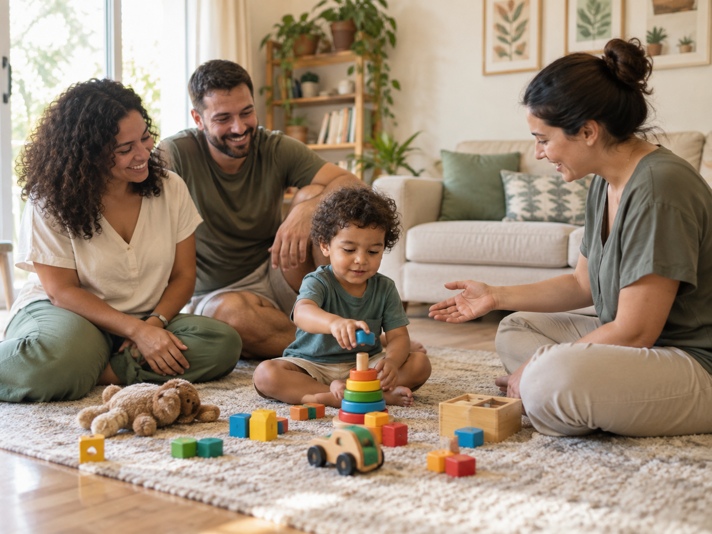
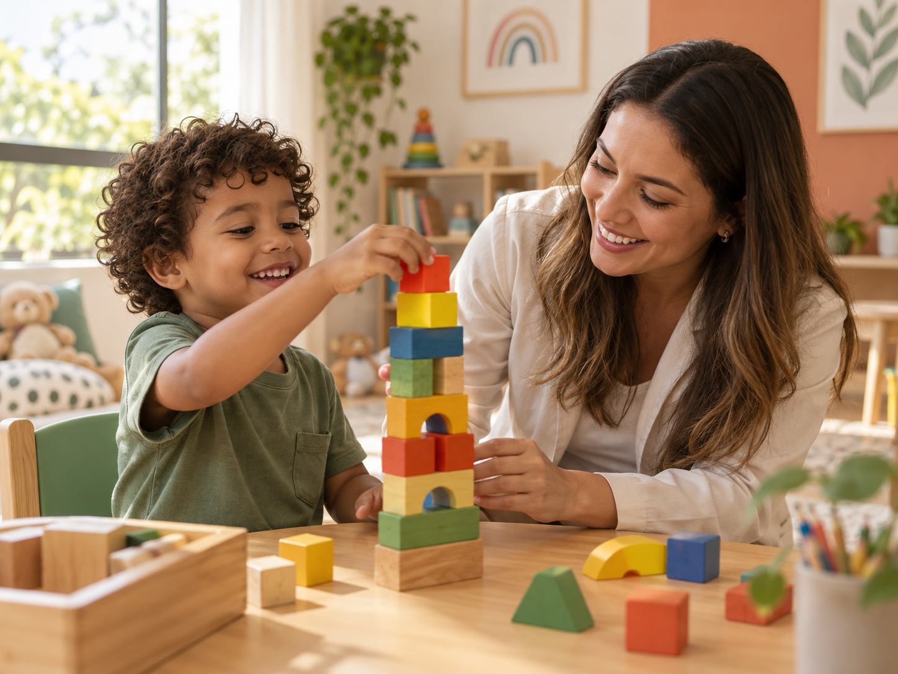
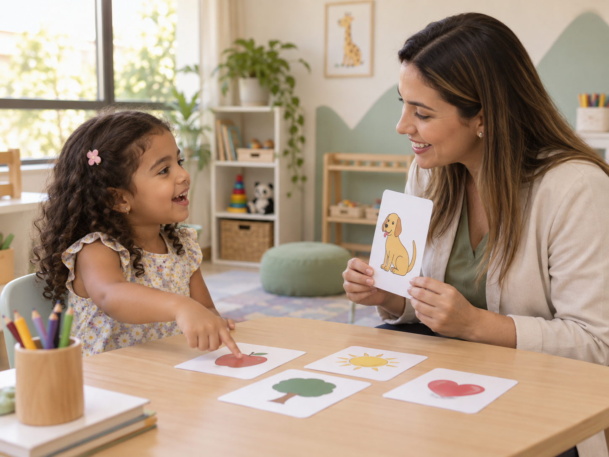
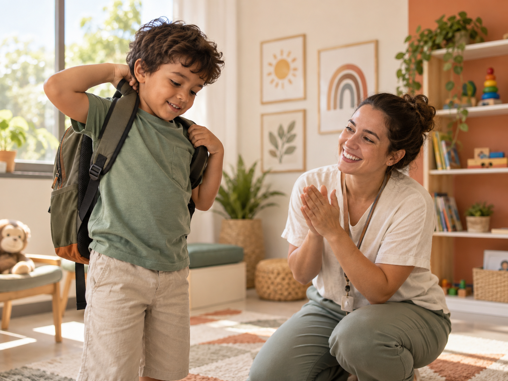

Escutar
Começamos conhecendo a rotina, as perguntas e os sonhos de cada família.
Um espaço para acolher histórias, acompanhar descobertas e construir possibilidades com cada família.
Conheça nossa abordagemCompreender a criança é também conhecer sua rotina, seus interesses e as pessoas que fazem parte dela. Por isso, cada acompanhamento começa com conversa, observação atenta e objetivos construídos em parceria.
O Instituto ABA São Joaquim nasceu do desejo de aproximar ciência, cuidado e vida real. A cada família que chega, aprendemos, ajustamos o caminho e celebramos novas possibilidades.
Começamos conhecendo a rotina, as perguntas e os sonhos de cada família.
Transformamos essa escuta em objetivos claros, possíveis e compartilhados.
Seguimos lado a lado, observando conquistas e ajustando as experiências.

Nas brincadeiras, nas escolhas, na comunicação e nas pequenas tarefas da rotina. Cada experiência pode ser uma oportunidade de participação, autonomia e vínculo.



Um ambiente seguro para que crianças e famílias se sintam ouvidas.
Interesses, escolhas e necessidades orientam cada experiência.
Decisões compartilhadas aproximam o cuidado da vida real.
Celebramos conquistas possíveis, respeitando o tempo de cada criança.
Conheça o Hospital Rumo Certo, parceiro que apoia iniciativas de cuidado e desenvolvimento.
Estamos disponíveis para escutar suas dúvidas e apresentar o instituto.